<!DOCTYPE html>

<html lang="zh-CN"><head><meta charset="utf-8"/><meta content="width=device-width,initial-scale=1" name="viewport"/><meta content="国防建设与外交成就" name="description"/><title>第五单元 · 中国历史八年级下册</title><link href="styles.css" rel="stylesheet"/><script>try{const t=localStorage.getItem('history-theme');if(t)document.documentElement.dataset.theme=t}catch(e){}</script></head><body data-page="unit" data-unit="5"><a class="skip-link" href="#main">跳到正文</a><header class="site-header">
<button aria-controls="site-sidebar" aria-expanded="false" aria-label="打开目录" class="menu-button" type="button"><span aria-hidden="true">☰</span><span>目录</span></button>
<div class="header-context"><strong>第五单元</strong><span aria-hidden="true">/</span><span id="current-section-name">单元导语</span></div>
<nav aria-label="页面导航" class="header-actions"><a class="header-nav" href="unit-04.html">← 上一单元</a><a aria-label="返回教材首页" class="header-nav home" href="index.html">首页</a><a class="header-nav" href="unit-06.html">下一单元 →</a><button aria-label="切换到深色模式" class="theme-toggle" title="深色模式" type="button"><span aria-hidden="true">◐</span></button></nav>
</header><div aria-hidden="true" class="drawer-overlay"></div><div class="site-layout"><aside aria-label="教材目录" class="sidebar" id="site-sidebar"><nav aria-label="教材目录" class="sidebar-nav"><a class="sidebar-home" href="index.html"><span class="brand-mark">史</span><span><strong>中国历史</strong><small>八年级下册</small></span></a><a class="nav-home-link" href="index.html">教材首页</a><details class="sidebar-unit" data-unit="1"><summary><span>第一单元</span><span aria-hidden="true" class="chevron">⌄</span></summary><div class="unit-links"><a class="unit-main-link" href="unit-01.html">中华人民共和国的成立和巩固</a><a class="section-link" data-section="unit-overview" href="unit-01.html#unit-overview">单元导语</a><a class="section-link" data-section="lesson-01" href="unit-01.html#lesson-01"><span>第1课</span><span>中华人民共和国成立</span></a><a class="section-link" data-section="lesson-02" href="unit-01.html#lesson-02"><span>第2课</span><span>抗美援朝</span></a><a class="section-link" data-section="lesson-03" href="unit-01.html#lesson-03"><span>第3课</span><span>土地改革</span></a><a class="section-link" data-section="source-pages" href="unit-01.html#source-pages">原书页面与插图</a></div></details><details class="sidebar-unit" data-unit="2"><summary><span>第二单元</span><span aria-hidden="true" class="chevron">⌄</span></summary><div class="unit-links"><a class="unit-main-link" href="unit-02.html">社会主义制度的建立与社会主义建设的探索</a><a class="section-link" data-section="unit-overview" href="unit-02.html#unit-overview">单元导语</a><a class="section-link" data-section="lesson-04" href="unit-02.html#lesson-04"><span>第4课</span><span>新中国工业化的起步和人民代表大会制度的确立</span></a><a class="section-link" data-section="lesson-05" href="unit-02.html#lesson-05"><span>第5课</span><span>三大改造</span></a><a class="section-link" data-section="lesson-06" href="unit-02.html#lesson-06"><span>第6课</span><span>艰辛探索与建设成就</span></a><a class="section-link" data-section="source-pages" href="unit-02.html#source-pages">原书页面与插图</a></div></details><details class="sidebar-unit" data-unit="3"><summary><span>第三单元</span><span aria-hidden="true" class="chevron">⌄</span></summary><div class="unit-links"><a class="unit-main-link" href="unit-03.html">中国特色社会主义道路</a><a class="section-link" data-section="unit-overview" href="unit-03.html#unit-overview">单元导语</a><a class="section-link" data-section="lesson-07" href="unit-03.html#lesson-07"><span>第7课</span><span>伟大的历史转折</span></a><a class="section-link" data-section="lesson-08" href="unit-03.html#lesson-08"><span>第8课</span><span>经济体制改革</span></a><a class="section-link" data-section="lesson-09" href="unit-03.html#lesson-09"><span>第9课</span><span>对外开放</span></a><a class="section-link" data-section="lesson-10" href="unit-03.html#lesson-10"><span>第10课</span><span>建设中国特色社会主义</span></a><a class="section-link" data-section="lesson-11" href="unit-03.html#lesson-11"><span>第11课</span><span>为实现中国梦而努力奋斗</span></a><a class="section-link" data-section="source-pages" href="unit-03.html#source-pages">原书页面与插图</a></div></details><details class="sidebar-unit" data-unit="4"><summary><span>第四单元</span><span aria-hidden="true" class="chevron">⌄</span></summary><div class="unit-links"><a class="unit-main-link" href="unit-04.html">民族团结与祖国统一</a><a class="section-link" data-section="unit-overview" href="unit-04.html#unit-overview">单元导语</a><a class="section-link" data-section="lesson-12" href="unit-04.html#lesson-12"><span>第12课</span><span>民族大团结</span></a><a class="section-link" data-section="lesson-13" href="unit-04.html#lesson-13"><span>第13课</span><span>香港和澳门回归祖国</span></a><a class="section-link" data-section="lesson-14" href="unit-04.html#lesson-14"><span>第14课</span><span>海峡两岸的交往</span></a><a class="section-link" data-section="source-pages" href="unit-04.html#source-pages">原书页面与插图</a></div></details><details class="sidebar-unit" data-unit="5" open=""><summary><span>第五单元</span><span aria-hidden="true" class="chevron">⌄</span></summary><div class="unit-links"><a class="unit-main-link" href="unit-05.html">国防建设与外交成就</a><a aria-current="location" class="section-link active" data-section="unit-overview" href="unit-05.html#unit-overview">单元导语</a><a class="section-link" data-section="lesson-15" href="unit-05.html#lesson-15"><span>第15课</span><span>钢铁长城</span></a><a class="section-link" data-section="lesson-16" href="unit-05.html#lesson-16"><span>第16课</span><span>独立自主的和平外交</span></a><a class="section-link" data-section="lesson-17" href="unit-05.html#lesson-17"><span>第17课</span><span>外交事业的发展</span></a><a class="section-link" data-section="source-pages" href="unit-05.html#source-pages">原书页面与插图</a></div></details><details class="sidebar-unit" data-unit="6"><summary><span>第六单元</span><span aria-hidden="true" class="chevron">⌄</span></summary><div class="unit-links"><a class="unit-main-link" href="unit-06.html">科技文化与社会生活</a><a class="section-link" data-section="unit-overview" href="unit-06.html#unit-overview">单元导语</a><a class="section-link" data-section="lesson-18" href="unit-06.html#lesson-18"><span>第18课</span><span>科技文化成就</span></a><a class="section-link" data-section="lesson-19" href="unit-06.html#lesson-19"><span>第19课</span><span>社会生活的变迁</span></a><a class="section-link" data-section="lesson-20" href="unit-06.html#lesson-20"><span>第20课</span><span>活动课：生活环境的巨大变化</span></a><a class="section-link" data-section="source-pages" href="unit-06.html#source-pages">原书页面与插图</a></div></details><a class="appendix-link" href="appendix.html">附录 · 大事年表与出版信息</a></nav></aside><main class="main-content" id="main"><section class="unit-hero" id="unit-overview"><p class="unit-kicker">UNIT 05 · 第五单元</p><h1>国防建设与外交成就</h1><div class="unit-intro">巩固的国防和强大的军队，是社会主义现代化建设的重要保障。经过几十年的发展，我国国防和军队建设事业取得了巨大成就，筑起了保卫祖国的钢铁长城。

中华人民共和国的成立，揭开了中国对外关系的新篇章。面对纷繁变幻的国际局势，中国始终坚持独立自主的和平外交政策，积极开展外交工作，在国际事务中发挥着越来越大的作用，为维护世界和平和促进共同发展作出了巨大贡献。</div><div class="unit-stats"><span>3 课</span><span>PDF 第 80–93 页</span><span>原书页面完整保留</span></div></section><section class="lesson-section" id="lesson-15"><header class="lesson-header"><div class="lesson-heading"><span class="lesson-number">15</span><div><p class="eyebrow">第 15 课</p><h2>钢铁长城</h2><div class="lesson-meta"><span>教材页 76–80</span><span>PDF 第 81–85 页</span></div></div></div><a class="source-jump" href="#source-lesson-15">查看原书页面 ↓</a></header><div class="lesson-body"><div class="page-transcript" data-pdf-page="81"><div class="page-transcript-head"><span>PDF 第 81 页</span><a href="#source-page-081">查看原书页</a></div><div class="transcript-segment"><p>2019年10月1日，盛大的中华人民共和国成立70周年国庆阅兵在北京举行，展现了我国人民军队威武之师、文明之师的风采。新中国成立以来，我国国防和军队建设发展迅速，实现了由单一军种到诸军兵种合成的转变，武器装备不断向现代化迈进。军队革命化、现代化、正规化建设取得的巨大成就，为社会主义现代化建设提供了强有力的保证，筑起了中华人民共和国的钢铁长城。我国的国防力量是怎样发展壮大的？</p><h3>陆、海、空军的建设</h3><p>新中国成立的时候，中国人民解放军主要是陆军，兵种也比较少。经过几十年的发展，我国陆军的现代化水平大大提高，发展成包括步兵、炮兵、装甲兵、防化兵、通信兵等多兵种的现代化部队，武器装备不断更新。在新中国成立前夕，中国人民解放军的第一支海军部队——华东军区海军建立。新中国成立后，又建立了东海、南海和北海舰队。新中国成立时，海</p><p class="caption-note">中华人民共和国成立70周年国庆阅兵中受阅的坦克方队</p><p>军只有百余艘陈旧舰艇。</p></div></div><div class="page-transcript" data-pdf-page="82"><div class="page-transcript-head"><span>PDF 第 82 页</span><a href="#source-page-082">查看原书页</a></div><div class="transcript-segment"><p>为了保卫祖国海疆的安全，我国陆续研制了多型舰艇，充实到海军。1971年，我国自行研制的导弹驱逐舰完成了多次科学试验和对外出访任务。接着，海军又陆续装备了我国自己制造的核潜艇。</p></div><div class="history-card"><h3>相关史事</h3><p>核潜艇具有很强的海上攻击力，现代海防不可缺少。1958年，中国决定自行研制核潜艇。毛泽东坚定地说：“核潜艇，一万年也要搞出来。”在周恩来具体领导下，许多科研、生产部门大力协作，终于在1970年研制出我国第一艘核潜艇，并于1974年装备我国海军。</p><p class="caption-note">准备下潜的核潜艇</p><p>进入20 世纪90年代以后，我国海军武器装备不断更新换代，现代化水平有了明显提高。海军已由水面舰艇部队、潜艇部队、海军航空兵、海军陆战队等多兵种组成，活动范围也逐步扩大。2012年9月，我国第一艘航空母舰“辽宁舰”交接入列。</p></div><div class="question-card"><h3>问题思考</h3><p>为什么旧中国有海无防，而新中国的海军能够保卫祖国的海疆？你能举个例子说说吗？</p><p class="caption-note">“辽宁舰”</p></div></div><div class="page-transcript" data-pdf-page="83"><div class="page-transcript-head"><span>PDF 第 83 页</span><a href="#source-page-083">查看原书页</a></div><div class="transcript-segment"><p>人民空军是在陆军的基础上建立起来的。20 世纪50年代初，空军部队已拥有各种飞机3 000 多架。空军刚刚诞生，就面临抗美援朝战争的考验。中国人民志愿军空军官兵不畏强敌，敢打敢拼，在朝鲜战场击落敌机300 多架，取得了辉煌战绩。</p></div><div class="history-card"><h3>相关史事</h3><p>蒋道平是一位中国人民志愿军空军战斗英雄。他在入朝作战前只接受了10个月的训练，在战斗机上飞行时间也不过19小时，没有实战经验。美国空军许多飞行员参加过第二次世界大战，飞行了上千小时，有丰富的战斗经验。1953年4月的一天，蒋道平和战友们驾机与前来轰炸的美国空军发生空战。混战之后，他掉了队，成为单机。突然，他发现一个敌机群飞过来，有30多架。蒋道平一个转弯咬住了后面两架敌机。随着一阵炮响，1架敌机被击中，冒着黑烟掉了下去。几十年后，蒋道平才知道，他击落的是美国著名王牌飞行员约瑟夫·麦康奈尔驾驶的战斗机。人民空军建立早期，飞机主要从国外购买，后</p><p class="caption-note">蒋道平在涂有5颗星的战机里，这5颗星代表他击落过5架敌机</p><p>来逐步走上国产化道路。1956年，我国仿制成功歼-5型歼击机。后来，我国又制造了各种型号的歼击机、</p></div><div class="history-card"><h3>相关史事</h3><p>轰炸机和强击机。改革开放以来，我国自行研制和引进了一批新型飞机，空军的现代化建设有了新的飞跃，成为保卫祖国领空的钢铁卫士。1956年9月10日，聂荣臻元帅亲自为第一架国产歼－5型飞机剪彩。1957年国庆节，国产的歼－5型飞机飞越天安门广场，接受检阅。毛泽东曾在天安门城楼上指着飞过去的飞机，高兴地对外宾说：“我们自己制造的飞机飞过去了！”</p><p class="caption-note">歼－20 战机</p></div></div><div class="page-transcript" data-pdf-page="84"><div class="page-transcript-head"><span>PDF 第 84 页</span><a href="#source-page-084">查看原书页</a></div><div class="transcript-segment"><h3>导弹部队的发展</h3></div><div class="history-card"><h3>相关史事</h3><p>导弹部队在现代化军队中不可或缺。1966年，中国组建第中国开始发展导弹核武器是在20世纪50年代。1956年，周恩来出席中央军委会议，代表中共中央宣布发展中国导弹武器的决定。1966年，中国第一次成功进行了发射导弹核武器的试验。这是中国人民加强国防力量的重大成就。二炮兵部队。它是中国战略威慑的核心力量，主要担负遏制他国对中国使用核武器、遂行核反击和常规导弹精确打击任务，由核导弹部队、常规导弹部队、作战保障部队等组成，装备了东风系列弹道导弹和长剑巡航导弹等。2015年，第二炮兵部队更名为火箭军。</p><p class="caption-note">地空导弹部队在演习中进行实弹发射</p><p class="caption-note">水下发射导弹</p><p class="caption-note">中华人民共和国成立70周年国庆阅兵中受阅的核导弹方队</p></div><div class="history-card"><h3>相关史事</h3><p>1949年10月1日开国大典时，中国人民解放军炮兵部队刚刚成立不久，接受检阅的炮兵部队使用的还主要是从国民党军队缴获的炮，以及一些土炮，只能打击地面目标。2019年10月1日，在中华人民共和国成立70周年的国庆阅兵中接受检阅的导弹方队，已经是包括地空导弹、岸舰导弹、舰舰/潜舰导弹、反坦克导弹、防空导弹、核导弹等多种导弹在内的装备方队了。它们威武地通过天安门，向世界展示着中国国防和军队建设的发展成就。我国的导弹可以打击地面目标，也可以打击空中和海上目标，可以在地面发射，也可以在水下发射，在保卫祖国安全上起着重要作用。</p></div></div><div class="page-transcript" data-pdf-page="85"><div class="page-transcript-head"><span>PDF 第 85 页</span><a href="#source-page-085">查看原书页</a></div><div class="transcript-segment"><h3>新时代强军之路</h3><p>面对强国强军的时代要求，我国国防和军队建设不断推进。2014年，全军政治工作会议在福建古田召开，强调军队政治工作要为新形势下的强军目标提供坚强政治保证。2016年，中国人民解放军成立五大战区，即东部战区、南部战区、西部战区、北部战区、中部战区，构建军队联合作战体系。中国人民解放军调整组建五大军种，即陆军、海军、空军、火箭军、战略支援部队。国防和军队改革取得历史性突破，形成军委管总、战区主战、军种主建的新格局，军队组织架构和力量体系实现革命性重塑，国防和军队的现代化建设取得巨大成就。</p></div><div class="history-card"><h3>相关史事</h3><p class="caption-note">习近平在朱日和联合训练基地乘车检阅部队</p><p class="caption-note">/钢铁长城/</p><p>2017年7月30日，庆祝中国人民解放军建军90周年阅兵在内蒙古朱日和联合训练基地举行。在阅兵仪式上，陆上作战、信息作战、特种作战、防空反导、海上作战、空中作战、综合保障、反恐维稳、战略打击9个作战群按作战编组接受检阅。这次阅兵反映了新形势下国防和军队改革取得的重大成就，体现了强军兴军的新局面。</p></div><div class="exercise-card"><h3>课后活动</h3><p>搜集我国历次阅兵所展示的军事装备的图片，加上说明，在班里办一个展览，展现我国军事装备的进步。</p></div><div class="knowledge-card"><h3>知识拓展</h3><p>百万大裁军进入20世纪80年代以来，党和国家领导人正确地预见到世界大战一时不会爆发。1985年6月，中国向全世界宣布，中国人民解放军将裁减员额100万。这是在改革开放的进程中，人民军队的建设服从国家现代化建设的大局而迈出的重要一步。经济和科技的竞争是当今世界最主要的较量。裁减军队数量，可以更好地集中人力财力进行现代化建设。裁减员额省下来的“人头费”，可以用于更新装备，加强军队的科技力量，从而达到提高部队战斗力的目的，使军队向现代化、正规化方向迈进。经过近3年的努力，1987年底，百万大裁军工作胜利完成。</p></div></div></div></section><section class="lesson-section" id="lesson-16"><header class="lesson-header"><div class="lesson-heading"><span class="lesson-number">16</span><div><p class="eyebrow">第 16 课</p><h2>独立自主的和平外交</h2><div class="lesson-meta"><span>教材页 81–84</span><span>PDF 第 86–89 页</span></div></div></div><a class="source-jump" href="#source-lesson-16">查看原书页面 ↓</a></header><div class="lesson-body"><div class="page-transcript" data-pdf-page="86"><div class="page-transcript-head"><span>PDF 第 86 页</span><a href="#source-page-086">查看原书页</a></div><div class="transcript-segment"><p>1949年，在中华人民共和国外交部的成立大会上，周恩来说：“中国一百年来的外交史是一部屈辱的外交史。我们不学他们。我们不要被动、怯懦，而要认清帝国主义的本质，要有独立的精神，要争取主动，没有畏惧，要有信心。” 新中国的成立，结束了我国百年的屈辱外交，翻开了外交事业的新篇章。独立自主的和平外交政策同新中国一起成长起来。你知道这一外交政策是如何制定和发展的吗？</p><h3>和平共处五项原则的提出</h3><p>新中国成立以后，奉行独立自主的和平外交政策。毛泽东在新中国成立的那一天，就向全世界宣告：“本政府为代表中华人民共和国全国人民的唯一合法政府。凡愿遵守平等、互利及互相尊重领土主权等项原则的任何外国政府，本政府均愿与之建立外交关系。”新中国展开积极的外交活动，在成立后的第一年里，就同苏联等十几个国家建立了外交关系，为恢复经济建设创造一个好的外部环境。而美国等一些帝国主义国家对新中国采取敌视态度，实行外交孤立政策，不与中国建交，并对中国实行封锁和禁运。</p></div></div><div class="page-transcript" data-pdf-page="87"><div class="page-transcript-head"><span>PDF 第 87 页</span><a href="#source-page-087">查看原书页</a></div><div class="history-card"><h3>相关史事</h3><p>1949年10月2日，苏联第一个宣布承认中华人民共和国，并与我国正式建立外交关系。为加强中苏两国的友谊，进一步发展两国人民的友好关系，毛泽东率领中国代表团访问苏联。1950年，中苏两国签订了《中苏友好同盟互助条约》，苏联政府贷款给中国3亿美元。这对促进中国经济的恢复和发展，打破帝国主义国家孤立封锁中国的政策，具有重要意义。</p><p class="caption-note">毛泽东和斯大林</p><p>1953年底，周恩来在接见印度代表团时，首次提出和平共处五项原则，作为处理两国关系的原则。和平共处五项原则现在表述为互相尊重主权和领土完整、互不侵犯、互不干涉内政、平等互利、和平共处。第二年，周恩来访问印度和缅甸，分别与印度总理尼赫鲁、缅甸总理吴努发表联合声明，双方一致同意以和平共处五项原则作为指导中印、中缅两国关</p><p class="caption-note">周恩来总理访问缅甸</p><p>系的基本原则。在三国总理的积极倡导下，和平共处五项原则在国际上产生深远影响，被世界上越来越多的国</p></div><div class="material-card"><h3>材料研读</h3><p>家接受，成为处理国与国之间关系的基本准则。两国总理重申这些原则①，并且感到在他们与亚洲以及世界其他国家的关系中也应该适用这些原则。如果这些原则不仅适用于各国之间，而且适用于一般国际关系之中，它们将形成和平和安全的坚固基础……—《中印两国总理联合声明》结合和平共处五项原则的内容，谈谈它对推动国际关系发展所起的作用。</p><p class="caption-note">① 这些原则，指和平共处五项原则。</p></div></div><div class="page-transcript" data-pdf-page="88"><div class="page-transcript-head"><span>PDF 第 88 页</span><a href="#source-page-088">查看原书页</a></div><div class="history-card"><h3>相关史事</h3><p class="caption-note">周恩来总理访问印度</p><p>1954年6月，周恩来率领中国代表团访问印度，受到印度总理尼赫鲁的热烈欢迎。尼赫鲁看到中国在抗美援朝战争中赢得很高的国际威望，对中国既敬佩，又担心。对此，周恩来有针对性地阐明和平共处五项原则的基本思想：各国不分大小强弱，不论其社会制度如何，是可以和平共处的。各国人民的民族独立和自主权利是必须得到尊重的。各国人民都应该有选择其国家制度和生活方式的权利，不应受到其他国家的干涉。尼赫鲁十分赞同周恩来的看法，欣然与周恩来发表联合声明。</p><h3>加强与亚非国家的团结合作</h3><p>新中国积极发展与亚非国家的友好关系，促进亚非国家之间的团结与合作。1955年，周恩来率中国代表团参加在印度尼西亚万隆召开的亚非会议。这是第一次没有西方殖民主义国家参加的亚非会议。会上，一些国家的代表由于受帝国主义国家挑拨，当着中国代表的面攻击共产主义，甚至怀疑中国对邻国搞“颠覆”活动。针</p><p class="caption-note">万隆会议期间的周恩来</p><p>对帝国主义破坏会议的阴谋和各国间的矛盾、分歧，周恩来提出“求同存</p></div><div class="history-card"><h3>相关史事</h3><p>异”的方针，促进了会议的圆满成功。中国代表团还积极开展会外交往，与很多国家的代表团举行会晤，加强了同亚非各国的团结与合作。万隆会议召开前夕，中国代表团部分成员乘坐印度国际航空公司“克什米尔公主号”飞机，由香港前往印度尼西亚。台湾特务机关阴谋刺杀周恩来，在飞机上安置了炸弹，致使飞机中途爆炸坠毁，十余人遇难。周恩来因行程有变，未搭乘此飞机，幸免于难。中国代表团并没有被这一破坏活动吓倒，仍然参加了这次会议。</p></div></div><div class="page-transcript" data-pdf-page="89"><div class="page-transcript-head"><span>PDF 第 89 页</span><a href="#source-page-089">查看原书页</a></div><div class="exercise-card"><h3>课后活动</h3><p>1．和平共处五项原则的内容是什么？</p><p>2．一个美国记者评论周恩来在万隆会议中的作用时说：“周恩来并不打算改变任何一个坚持反共立场的领导人的态度，但是他改变了会议的航向。”你认为周恩来为什么能改变会议的航向？</p></div><div class="knowledge-card"><h3>知识拓展</h3><p>周恩来和日内瓦会议1954年4月至7月，中华人民共和国第一次以五大国之一的身份，参加了在日内瓦召开的关于解决朝鲜问题和印度支那问题的国际会议。中国代表团团长周恩来在会上进行了积极的外交努力。会议最终就恢复印度支那和平问题签署了一系列协议，从而缓和了亚洲及世界的紧张局势，巩固了中国南部边界的安全。在会议期间，周恩来出色的外交才能和政治家风度，为新中国赢得了很高的国际声誉，大大提高了中国的国际地位，为打开新中国外交的新局面作出了巨大贡献。</p><p class="caption-note">周恩来步入日内瓦会议会场</p></div></div></div></section><section class="lesson-section" id="lesson-17"><header class="lesson-header"><div class="lesson-heading"><span class="lesson-number">17</span><div><p class="eyebrow">第 17 课</p><h2>外交事业的发展</h2><div class="lesson-meta"><span>教材页 85–88</span><span>PDF 第 90–93 页</span></div></div></div><a class="source-jump" href="#source-lesson-17">查看原书页面 ↓</a></header><div class="lesson-body"><div class="page-transcript" data-pdf-page="90"><div class="page-transcript-head"><span>PDF 第 90 页</span><a href="#source-page-090">查看原书页</a></div><div class="transcript-segment"><p>1971年7月的一天，中美两国同时发表公告，宣布美国总统尼克松将访问中国，以谋求两国关系的正常化，并就双方关心的问题交换意见。公告的发表，引起世界舆论的震动。正如尼克松后来在回忆录中所说，宣读公告只用了三分半钟，“却成了本世纪最出人意料的外交新闻之一”。中美关系如何实现了正常化？我国在联合国的合法席位是如何恢复的？改革开放以来，我国又取得了哪些外交成就？</p><h3>恢复在联合国的合法席位</h3><p>联合国成立于1945年，是由主权国家组成的国际组织。中国是创始会员国之一，也是联合国安理会常任理事国之一，当时由国民政府代表中国。1949年中华人民共和国成立后，作为代表中国的唯一合法政府，理应享有联合国的合法席位。但是，在美国等国家的操纵下，联合国长期将中华人民共和国排斥在外，仍由台湾国民党当局占据中国在联合国的席位。为争取恢复合法席位，中华人民共和国进行了长期努力，得到越来越多国家的支持。1971年10月，第26届联合国大会通过决议，恢复中华人民共和国在联合国的一切合法权利，并立即把</p></div></div><div class="page-transcript" data-pdf-page="91"><div class="page-transcript-head"><span>PDF 第 91 页</span><a href="#source-page-091">查看原书页</a></div><div class="transcript-segment"><p>台湾国民党当局的代表从联合国及其所属一切机构中驱逐出去。这是中国外交的重大胜利。中国</p></div><div class="question-card"><h3>问题思考</h3><p>积极参与国际事务，作为联合国安理会常任理事国之一，发挥了重要作用。我国为什么能够在20世纪70年代恢复在联合国的合法席位？</p></div><div class="history-card"><h3>相关史事</h3><p>1971年10月25日，阿尔巴尼亚、阿尔及利亚等国提出的关于恢复中华人民共和国在联合国的一切合法权利的提案，在第26届联合国大会上进行表决。当76票赞成、35票反对、17票弃权的结果出来时，会场上沸腾了。很多国家的代表欢呼、鼓掌、拥抱，向中国表示祝贺，有的非洲代表高兴得跳起舞来。11月15日，乔冠华率中国代表团参加第26届联合国大会，受到热烈欢迎。</p><p class="caption-note">恢复中华人民共和国在联合国的一切合法权利的提案通过后，多国代表欢呼庆祝</p><h3>中美、中日建交</h3><p>新中国成立后，美国政府敌视新中国，对新中国实行封锁禁运、包围威胁的政策。双方敌对的状态长达20 多年。随着中国国际地位的提高和国际形势的变化，20 世纪70年代初，改善中美关系成为两国共同的要求，中美关系出现了转机。</p></div><div class="history-card"><h3>相关史事</h3><p>美国总统尼克松在一份对外报告中说，如果没有中国这个拥有7亿多人民的国家出力量，要建立稳定和持久的国际秩序是不可设想的。此时，美国再也不能不承认中华人民共和国的发展和在国际事务中的作用了。中国对美国改善中美关系的表示，作出了积极的反应。1971年，美国乒乓球代表团正式访问中国，这是新中国成立以来第一个美国代表团访问中国。“小球转动大球”的“乒乓外交”轰动了世界。</p></div></div><div class="page-transcript" data-pdf-page="92"><div class="page-transcript-head"><span>PDF 第 92 页</span><a href="#source-page-092">查看原书页</a></div><div class="transcript-segment"><p>1971年7月，尼克松总统的国家安全事务助理基辛格秘密访问中国，同周恩来总理举行会谈。1972年，尼克松访华。毛泽东会见了尼克松，周恩来与尼克松举行了会谈。中美双方正式签署并发表了《联合公报》，两国关系开始走向正常化。1979年，中美正式建立外交关系。美国承认只有一个中国，台湾是中国领土的一部分，承认中华人</p><p class="caption-note">毛泽东会见美国总统尼克松</p><p>民共和国政府是中国的唯一合法政府。1972年，日本首相田中角荣访华，中日两国正式建立外交关系。接着，许多国家纷纷与中国建立外交关系，出现了与中国建交的高潮。</p><p class="caption-note">毛泽东会见日本首相田中角荣</p><p>全方位外交改革开放以后，中国继续奉行独立自主的和平外交政策，坚持在和平共处五项原则的基础上，同其他国家发展友好合作关系。中国注重改善和发展与周边国家的睦邻友好关系，注重加强同发展中国家的政治经济合作，力争中美、中日关系稳定发展，逐步实现中苏关系正常化，积极发展与欧盟国家的关系。中国积极发展全球伙伴关系，秉持共商共建共享的全球治理观，顺应和平、发展、合作、共赢的时代潮流，积极参与全球治理体系改革和建设，推动构建人类命运共同体。中国积极拓展多边外交，加强与联合国的合作，为解决区域性争端、维护世界和平和建立一个公正合理的世界新秩序而努力。中国广泛参与多边经济、社会领域的活动，在环境、粮食、预防犯罪、禁毒、难民、妇女等全球性问题上发挥了积极作用。</p><p class="caption-note">1979年，邓小平在访问美国时会见美国总统卡特</p></div></div><div class="page-transcript" data-pdf-page="93"><div class="page-transcript-head"><span>PDF 第 93 页</span><a href="#source-page-093">查看原书页</a></div><div class="transcript-segment"><p>中国特色大国外交全面推进，形成全方位、多层次、立体化的外交布局。截至2019年9月，中国已与世界上180个国家建交，参加了100多个政府间国际组织的工作。中国举办“一带一路”国际合作高峰论坛、亚太经合组织领导人非正式会议、二十国集团领导人峰会、金砖国家领导人厦门会晤、亚信峰会等重要国际会议，加强国际合作。中国的国际地位</p><p class="caption-note">习近平宣布“一带一路”国际合作高峰论坛圆桌峰会开始</p><p>不断提高，成为维护和促进世界和平、稳定与发展的坚定力量，在国际事务中发挥着日益重要的作用。</p><p class="caption-note">/外交事业的发展/</p></div><div class="exercise-card"><h3>课后活动</h3><p>1．20世纪70年代初中国外交开创了新局面，请列举3 件外交上的大事。</p><p>2．查阅有关报刊或互联网资料，了解亚太经合组织有多少个成员。中国参加了哪几次亚太经合组织领导人非正式会议？</p></div><div class="knowledge-card"><h3>知识拓展</h3><p>亚太经合组织亚太经合组织的英文全称是Asia-Pacific Economic Cooperation，APEC是英文缩写。它成立于1989年，是亚洲太平洋地区的经济合作机制。中国于1991年加入后，积极参与亚太地区的经济合作与发展。2001年，中国在上海成功主办了亚太经合组织第九次领导人非正式会议，美国总统布什、俄罗斯总统普京等19位领导人出席，江泽民主席发表了讲话。这是一次大规模、高规格的多边外交活动。2014年，亚太经合组织第二十二次领导人非正式会议在北京成功举行。习近平主席主持会议并发表讲话。各成员领导人围绕“共建面向未来的亚太伙伴关系”主题深入交换意见，达成广泛共识。这次会议是亚太合作进入历史新阶段的一次重要会议，取得了丰硕成果。</p></div></div></div></section><section class="source-pages" id="source-pages"><div class="source-pages-header"><div><p class="eyebrow">SOURCE PAGES</p><h2>原书页面与插图</h2></div><p>点击页面可在新窗口查看大图；图片不随深色模式反色。</p></div><div class="source-group" id="source-unit-overview"><h3>第五单元导语</h3><div class="page-grid"><figure class="original-page" id="source-page-080"><a href="images/page-080.webp" rel="noopener" target="_blank" rel="noopener noreferrer">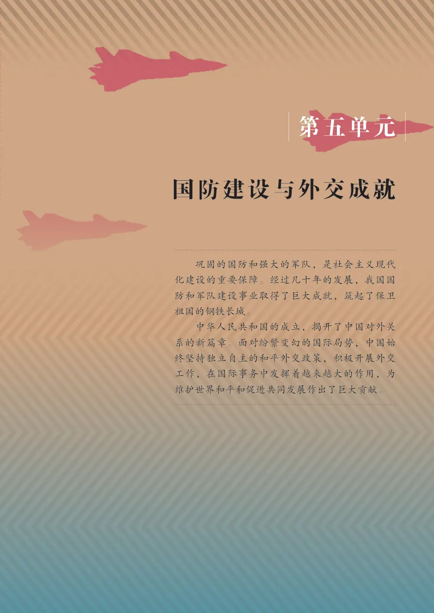</a><figcaption>教材第 75 页（PDF 第 80 页）</figcaption></figure></div></div><div class="source-group" id="source-lesson-15"><h3>第 15 课 · 钢铁长城</h3><div class="page-grid"><figure class="original-page" id="source-page-081"><a href="images/page-081.webp" rel="noopener" target="_blank" rel="noopener noreferrer">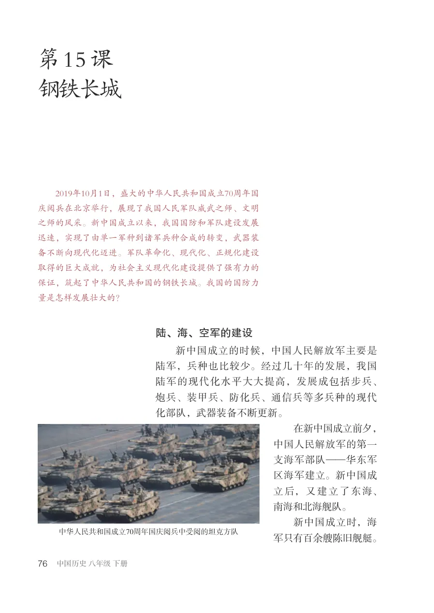</a><figcaption>教材第 76 页（PDF 第 81 页）</figcaption></figure><figure class="original-page" id="source-page-082"><a href="images/page-082.webp" rel="noopener" target="_blank" rel="noopener noreferrer">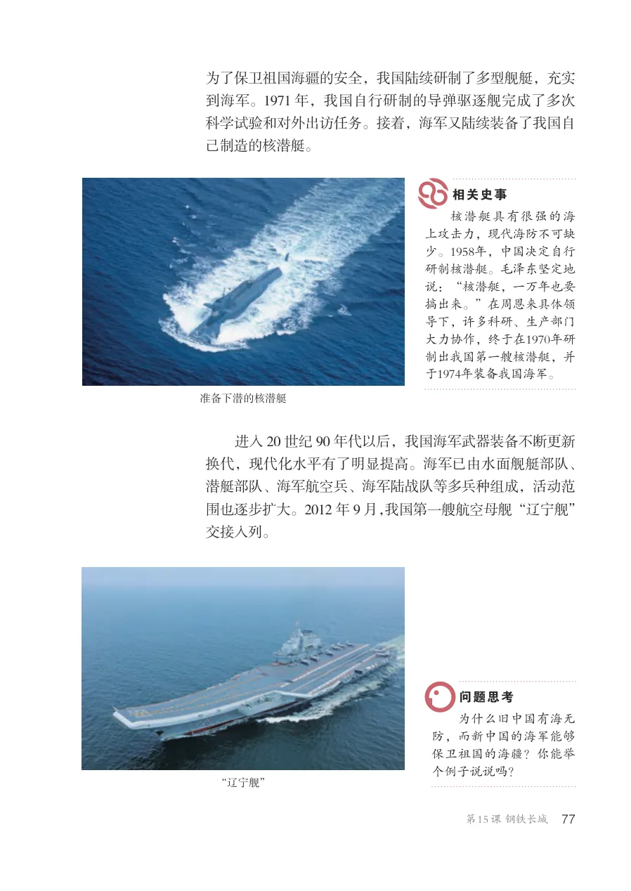</a><figcaption>教材第 77 页（PDF 第 82 页）</figcaption></figure><figure class="original-page" id="source-page-083"><a href="images/page-083.webp" rel="noopener" target="_blank" rel="noopener noreferrer">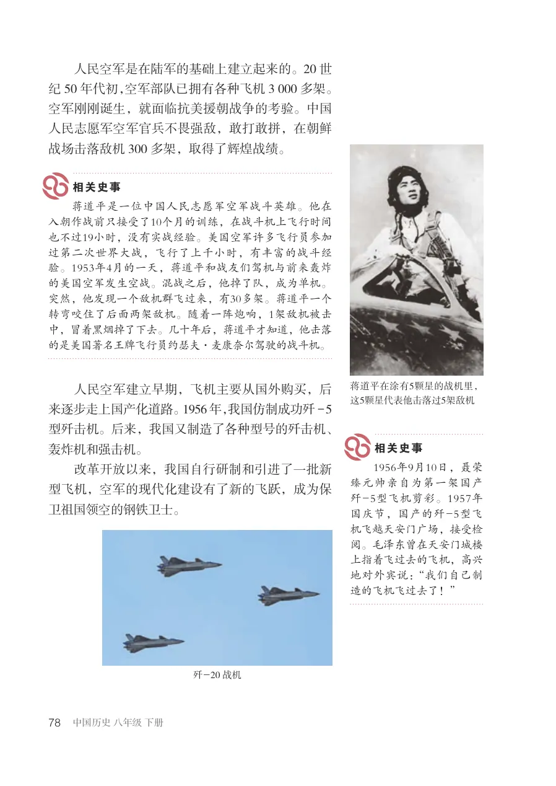</a><figcaption>教材第 78 页（PDF 第 83 页）</figcaption></figure><figure class="original-page" id="source-page-084"><a href="images/page-084.webp" rel="noopener" target="_blank" rel="noopener noreferrer">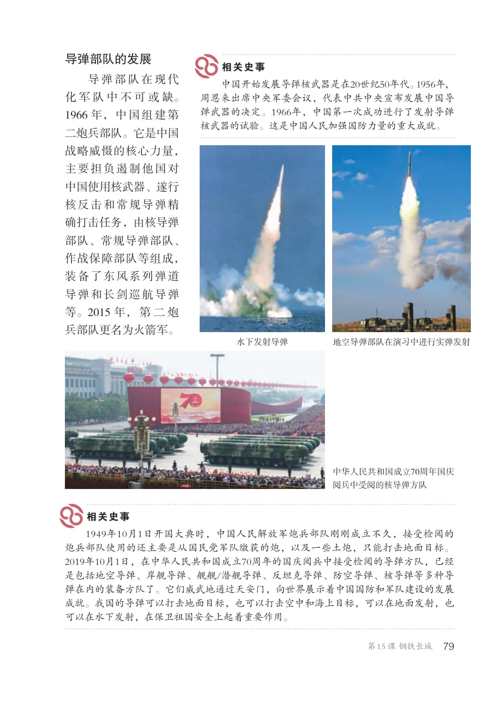</a><figcaption>教材第 79 页（PDF 第 84 页）</figcaption></figure><figure class="original-page" id="source-page-085"><a href="images/page-085.webp" rel="noopener" target="_blank" rel="noopener noreferrer">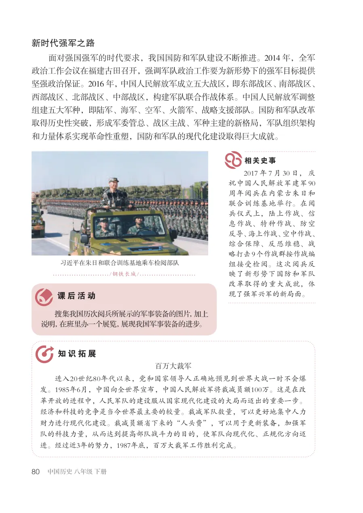</a><figcaption>教材第 80 页（PDF 第 85 页）</figcaption></figure></div></div><div class="source-group" id="source-lesson-16"><h3>第 16 课 · 独立自主的和平外交</h3><div class="page-grid"><figure class="original-page" id="source-page-086"><a href="images/page-086.webp" rel="noopener" target="_blank" rel="noopener noreferrer">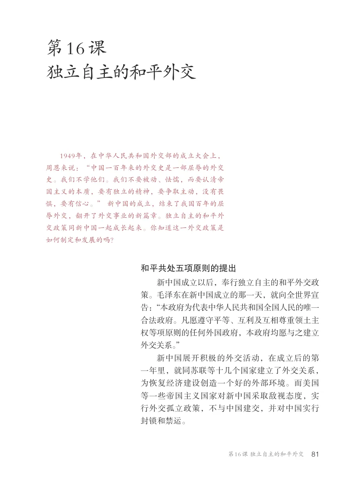</a><figcaption>教材第 81 页（PDF 第 86 页）</figcaption></figure><figure class="original-page" id="source-page-087"><a href="images/page-087.webp" rel="noopener" target="_blank" rel="noopener noreferrer">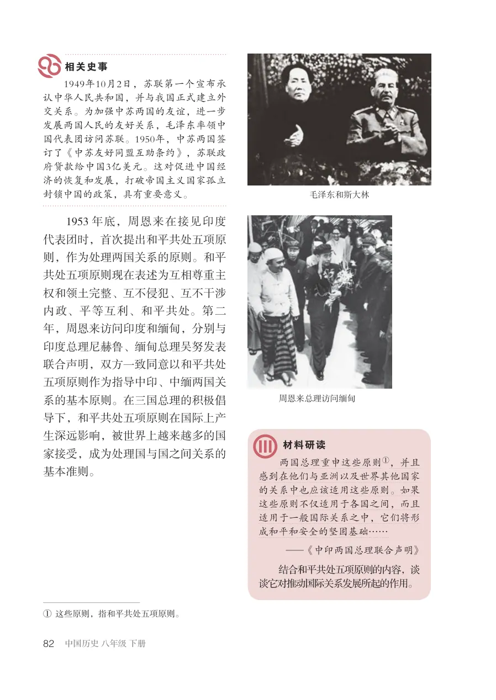</a><figcaption>教材第 82 页（PDF 第 87 页）</figcaption></figure><figure class="original-page" id="source-page-088"><a href="images/page-088.webp" rel="noopener" target="_blank" rel="noopener noreferrer">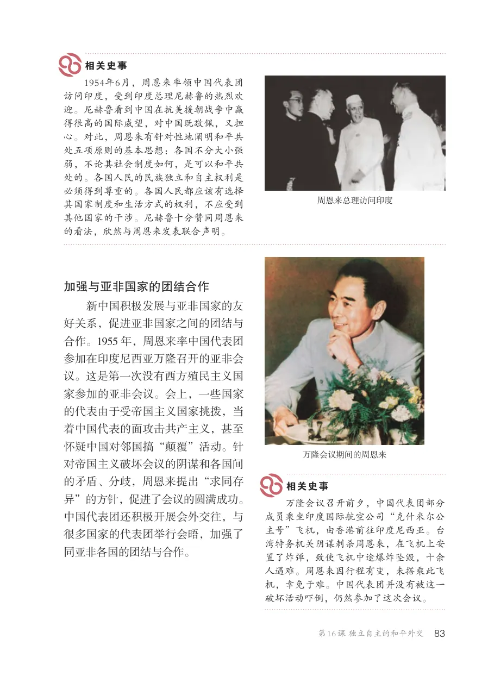</a><figcaption>教材第 83 页（PDF 第 88 页）</figcaption></figure><figure class="original-page" id="source-page-089"><a href="images/page-089.webp" rel="noopener" target="_blank" rel="noopener noreferrer">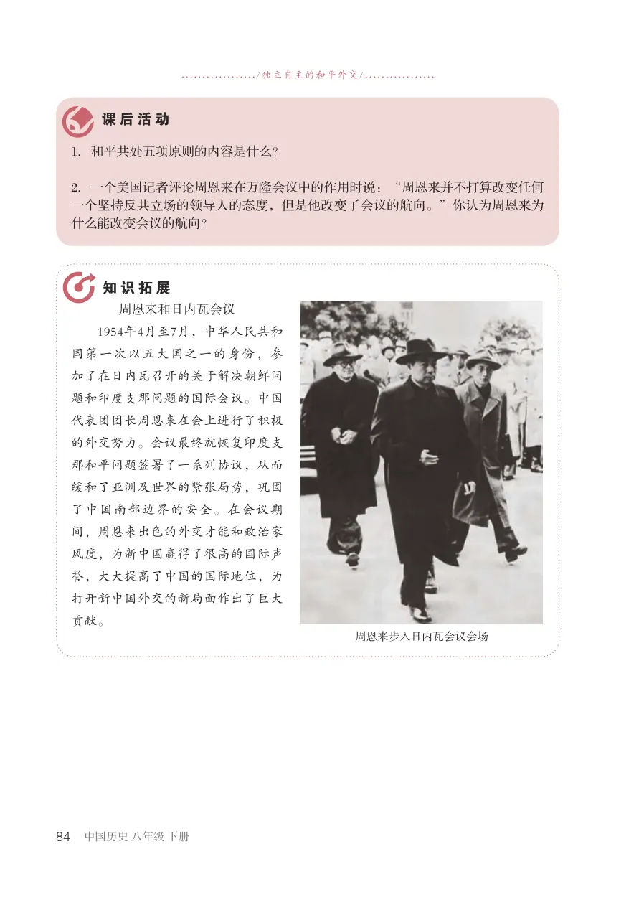</a><figcaption>教材第 84 页（PDF 第 89 页）</figcaption></figure></div></div><div class="source-group" id="source-lesson-17"><h3>第 17 课 · 外交事业的发展</h3><div class="page-grid"><figure class="original-page" id="source-page-090"><a href="images/page-090.webp" rel="noopener" target="_blank" rel="noopener noreferrer">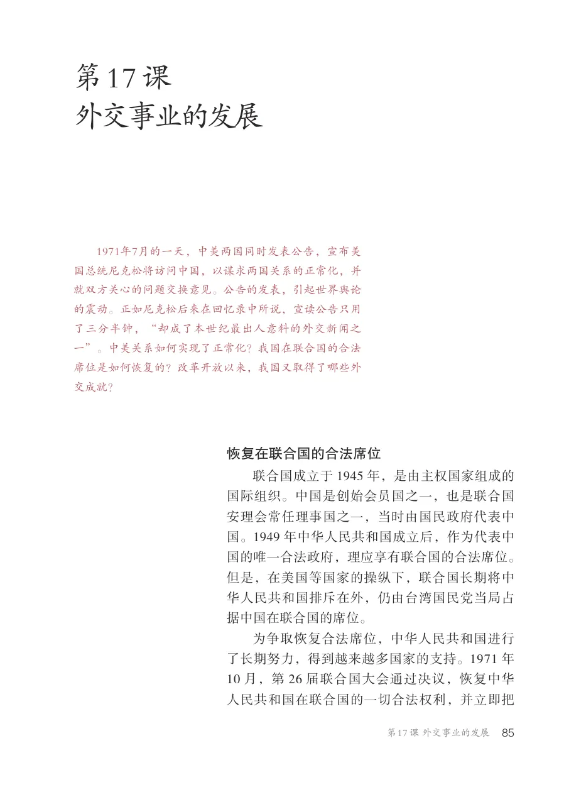</a><figcaption>教材第 85 页（PDF 第 90 页）</figcaption></figure><figure class="original-page" id="source-page-091"><a href="images/page-091.webp" rel="noopener" target="_blank" rel="noopener noreferrer">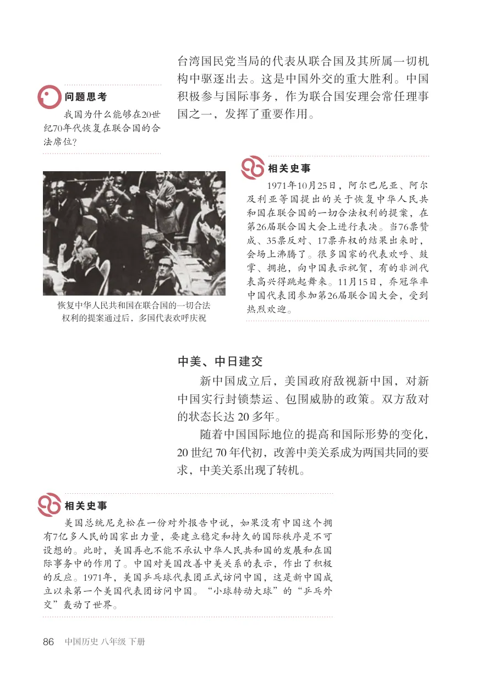</a><figcaption>教材第 86 页（PDF 第 91 页）</figcaption></figure><figure class="original-page" id="source-page-092"><a href="images/page-092.webp" rel="noopener" target="_blank" rel="noopener noreferrer">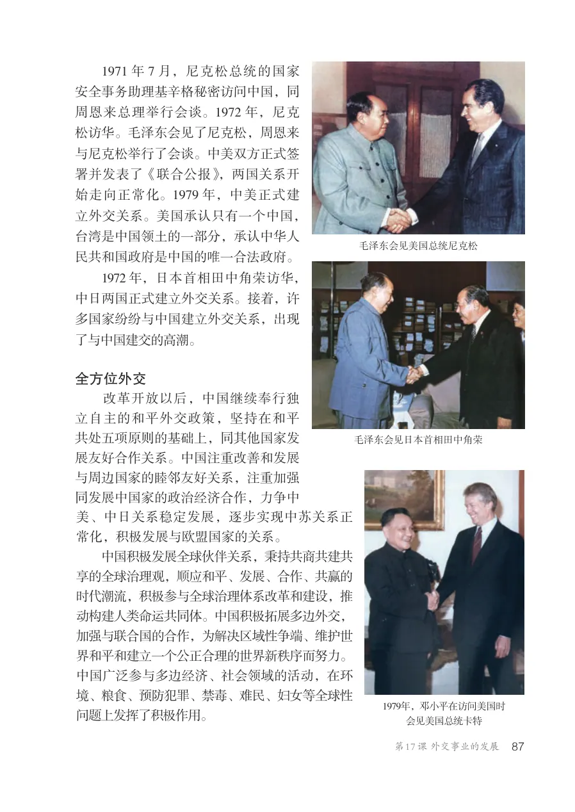</a><figcaption>教材第 87 页（PDF 第 92 页）</figcaption></figure><figure class="original-page" id="source-page-093"><a href="images/page-093.webp" rel="noopener" target="_blank" rel="noopener noreferrer">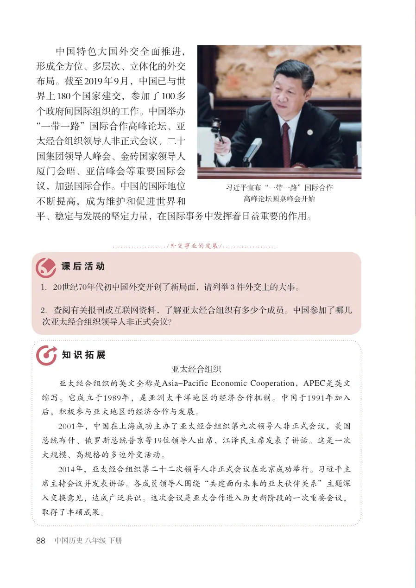</a><figcaption>教材第 88 页（PDF 第 93 页）</figcaption></figure></div></div></section><p class="unit-end">第五单元结束 · 请使用页眉进入下一单元</p></main></div><footer class="site-footer">中国历史八年级下册 · 增强型离线 HTML 学习网站</footer><script src="script.js"></script></body></html>